来源：https://qksol6dqav.feishu.cn/docx/FO9sdq0OIoTr3fxvIiFcA1nSnCT
生财圈友们，大家好，我是武汉萍子。
今年是我加入生财的第四年。前三年因为生财赚了50W+，感恩亦仁老大搭建的这个平台，感谢各位伙伴的无私分享。
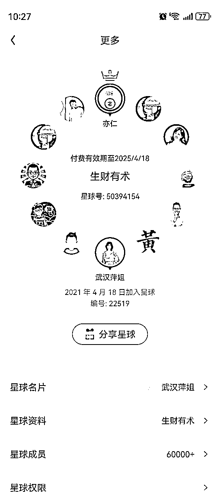
今年抓住视频号这一波风口期，解决视频号直播拉时长困难的这一需求，两个月组建了千人代播团队，为视频号的“掘金者”提供“卖铲子”的服务，三月月入10W+，四月月入20W+，目前整体项目框架己完善，发展较平稳，我们现在就是不断优化提升，自己卷自己。
这篇文章主要分享视频号带货代播项目的一些经历和细节的深度复盘，希望对你有所帮助。
这几年，在生财，如果你搜【视频号】这三个字，在航海，训练营，以及嘉宾分享，学员分享，复盘，数不胜数，视频号仍然处在红利期。
这几期的视频号航海有多火爆大家应该有所感觉，视频号目前真的是普通人能够获得正反馈最简单和最快的平台了，从2022年初的野蛮生长期，有手就能赚到，中间每几个月都会经历一次迭代，到现在最新的真人实拍口播混剪+直播转化，社群内，每天日入几十万，日入几万，几千，数不胜数。
不记得在哪看到过亦仁大大说的一句话：
一个项目从发出到全网流行，大概有 2~3 年的窗口期，在生财有术可以早一年知道这个窗口期的到来，对于大部分普通人来说，一年时间也足够了。
普通人遇到逆天改命的项目不多，视频号算一个。
我是2023年下半年，参与了视频号口播训练营，因为视频与直播是可以相互促进的，基本上发出去的视频有了流量，第一时间会开直播进行引导下单转化。
第一阶段，社群内大家相互合作，甲有流量需要直播，乙帮忙代播，成交了利润五五分。我空了也会帮圈友去直播，大家一起合作分佣。
每天打账号，帮人代播，过得无比充实，当时代播还需要把号主的微信号和密码拿过来，登陆到自己手机上面，然后开直播，从下午5点开始，一直持续到第二天早上8点半左右，接近16个小时，全程高能输出，状态全开。而且整场直播，孟总全程在线，实时指导，什么时候补视频，观察后台的进线情况。
相当于台前我不仅直播，还得补视频，后台数据大屏的实时数据截图反馈在群内，看看转化率，进线情况，有必要孟总就会及时在群内指导该怎么调整直播状态。整个过程大家配合得非常好，直播中的所有环节都有参与，细节知道得比较多，为我后面的指导新人提供了很好的经验。
只要是视频5分钟进线低于30个就补，号主把视频发在群内，我一边电脑补视频，一边在镜头前继续促单转化。
果然视频号的老宝贝们都是4点陆续起床，流量高峰期也就是从5点开始，直播间哗哗进人，当时每十分钟就可以有1000GMV。
播了十几个小时，一点也不觉得累，看着数据大屏的出单节奏，整个人都处于亢奋的状态。一直到早上八点半左右，身体才后知后觉，整个人眼前都模糊了，还好号主不用上班，就接过去了，整场下来4万的GMV。
打完这一场就好好睡了一觉。
朋友觉得16个小时就可以分到10900，真的好厉害，好多呀！但是对于我来说，除了当时直播过程中，看到GMV蹭蹭涨，特别有成就感，知道可以分那么多佣金，快乐几分钟后，接着就不开心了，因为接下来的整整一周整个人的状态都是迷迷糊糊，干什么事情都没精神。
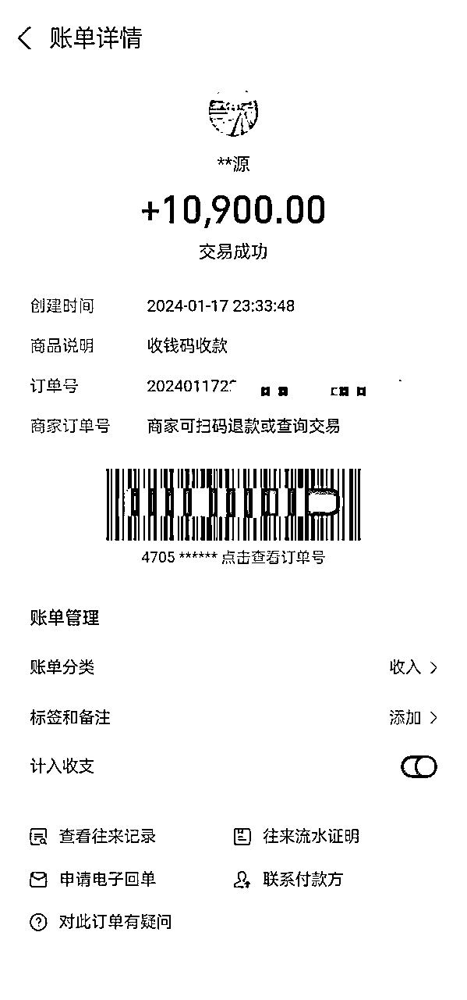
能不能通过给人长期代播赚钱？
能赚钱，但是长期肯定不行！
第一，不可能每个人的流量都这么好；
第二，代播一个通宵可能就得好几天缓过来；
其它时间还是照旧自己实拍，剪视频，做账号，有流量了就给自己播，没有的时候就零星帮朋友们播一播，但是随着社群成绩越来越好，爆单越来越多，大家对代播的需求一度高涨。
虽然自己帮人代播五五分很赚钱，但是我清楚，一定不能局限于眼前利润，要考虑更长久、可持续的利润。
1月底，随着社群内代播需求越来越大，大家相互帮忙直播己经满足不了需求了，于是我们就想，需求这么大，要不成立一个代播团队吧？
给人代播的过程中，我特别享受直播间那种不断热卖的状态，如果把这件事情做成事业，那应该也是一件非常愉快的事情。
创业，做项目，有的时候真的只需要确立一个方向，剩下的就是执行力跟上了。
我、光华、大麦作为代播团队的创始人，当天就达成一致，要么不开始，开始了我们就全力以赴做到最好。
我们梳理出团队初期的一套规则——
我们的定价是，白班35元/小时，晚班45元/小时。15分钟以内，不计费，超过15分钟按0.5小时来算，相当于四舍五入了。
这后面也是根据各种反馈，优化成按分钟计费，相对更客观，更合理。如果白天只播了20分钟，就是35/60*20=11元。
除去给主播的工资，一小时我们可以有15元的利润，看似还比较可观，后面发现，这根本就是微微利......
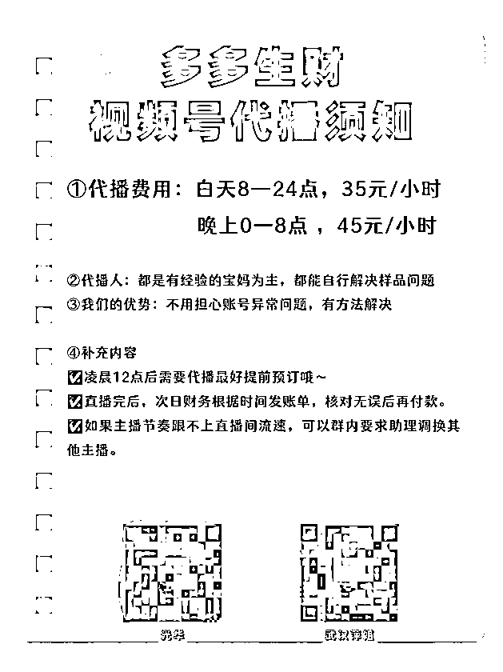
当时没有其它渠道招主播，就在朋友圈发布招主播信息，因为之前陆陆续续有做过一些项目积累，朋友圈里有很多宝妈。
代播这个副业，不仅没有门槛，而且还是日结，白天6点—24点，20元/小时，晚上0点—6点，30元/小时（后来这个时间段有调整，晚班时间为0-8点），对她们吸引力很强，当天就有朋友加入。
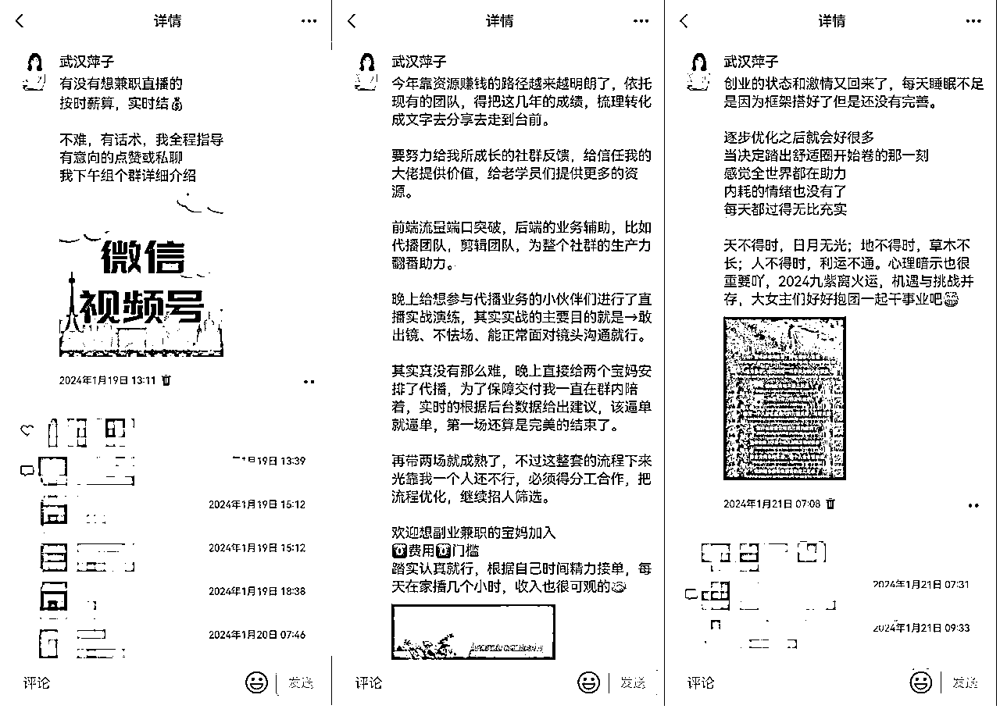
我曾经在抖音直播招募过学生，视频号一直自己直播，也帮别人代播，对于如何去优化话术，吸引直播间的停留，促单都有比较丰富的经验，所以给新人进行培训这一块也是信手拈来。
如:
【活动价给力】日常价XXX，今天自家工厂开工福利，自家工厂在视频号首播，只要XXX，活动数量不多，错过就真的没有了，仅剩十单……还有七单.(这里一定要配合夸张的手势来，比划出来，激动啊，错过就没有了)
【通用话术】点击下面红色购买，付款成功就代表抢到了，仅剩10单，拼手速了哥姐.….你付不了款跟我说也没有办法，咱就一个，付款成功就代表抢到了，咱老粉朋友听到有福利都呼朋唤友抢了好多，现在数量不多了，抢完主播就下播了。上面还有28个哥姐你们在做什么，拍了没付款的立马踢出去，不要占库存啊，抓紧时间拼手速
样品很重要!!没有样品接不了单!!
特殊品除外
【一定要自主的去了解产品特性，这样才能融汇贯通】
基本上新人按着这个框架，再配合每个品的话术，上手还是很快的。
细节方面就是在直播间现场进行演示，比如：
开场白第一句话怎么下钩子留人？
大家习惯性的是：欢迎新进直播间的哥姐.......
我们优化的是，第一句话就要锁定人群。
因为这些人群都是看过视频，被种过草的，来直播间就是要看主播怎么戳痛点，怎么利他，吸引下单的。
开头，我们针对不同的品优化，如：
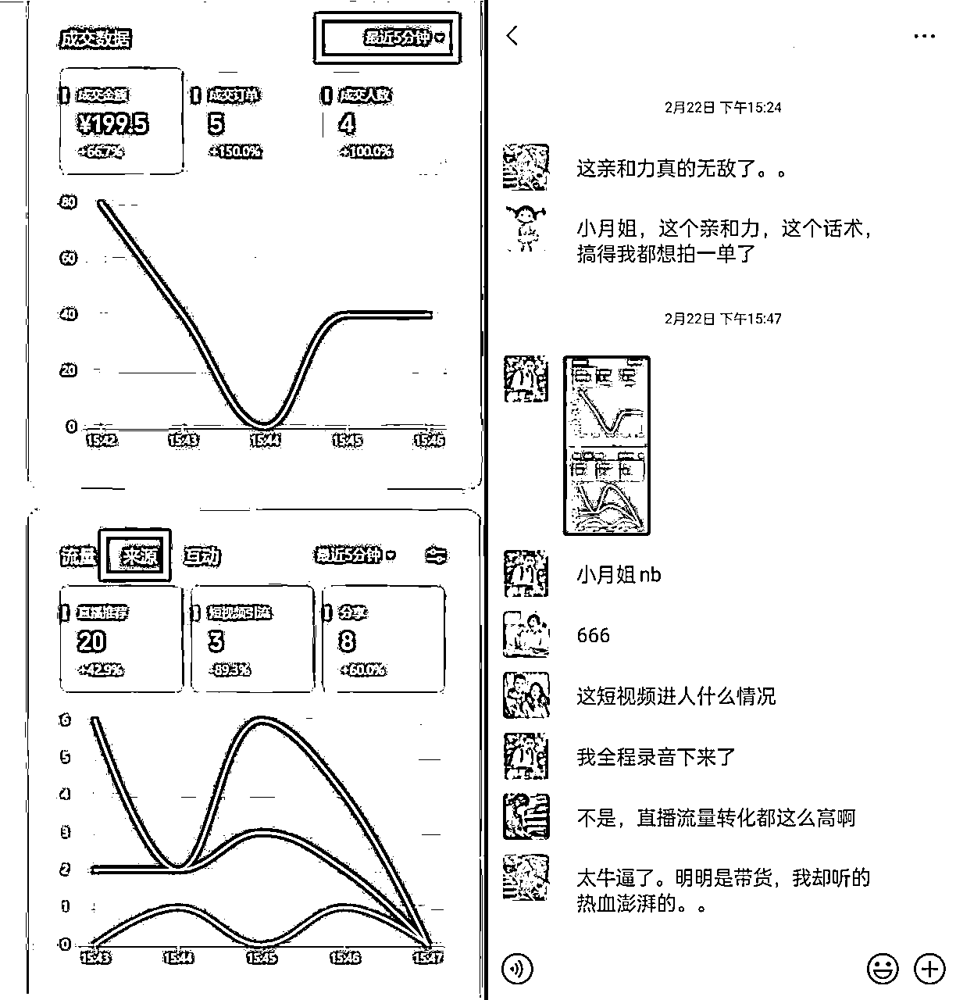
（这是我播的一场足球灯）
不要废话，视频号大部分都是看过视频进来直播间的，但是也有很多是直播推荐的，只要我们每一句话优化得好，话术精炼，肢体语言和情绪展现得好，那么转化率就能得到很好的提升，哪怕是直播推荐的泛流量，也能转化。
有很多人遇到问题，就是：
新直播间刚开，没有多少人，那要怎么播呢？
这个时候就必须得点对点的，用低客单价一单一单卖，卖够十单，这样左下角的商品链接会出现【热卖*10】这样的提示。
因为只要出现这个【热卖*10】以后，后面只要再成交都会出现【热卖*11】出一单数字就会加一，就会显得很火热，来到直播间的看到，也会比较吸引人眼球，适当停留，毕竟中老年人多少都有些凑热闹的心理。
这时候我们再转换话术，引导高客单价，三瓶五瓶，十瓶八瓶的去拍。
例：足球灯话术
咱这足球灯展开了五个面，家里孩子写作业都完全没有问题（暗示灯足球亮），白天户外晒一小时，用两三个晚上完全没有问题（暗示蓄航时间长），厨房挂一个、院子挂一个、客厅挂一个、房间挂一个得省多少电呐（暗示省钱啊），随随便便三五年都没有问题，今天咱们做福利活动，平时99一个，现在只要39.9就可以带回去，咱们直接两个三个的去拍（引导高客单）
连麦看不到实时在线，怎么去判断直播间人很多？
三个方法——
基本上这三点就可以判断此时直播间人数是否进得较快。
进得较快，那我们塑品就要少一些，一两句带过然后就促单，引导大家赶紧点击下面红色购买直接去拍去抢，语气和肢体语言要展现出，手速慢了就吃亏了的氛围，以此刺激下单。
直播间人一直很少，进人慢怎么播？
这个时候咱们就是点对点去喊，看到谁进来就直接喊XX哥，XX姐，再加上促单话术。
例：王哥，夏天家里只要开空调咱就得用这个，你直接点下面红色购买就可以，今天咱自家工厂来视频号首播做福利，家里有一台空调咱们就拍一瓶，有三台就拍三瓶，拿回去啊直接自己动手清洗，方便又省钱......
（要精准的喊，感觉就是像和他聊天一样的，去聊，这样精准的去转化）
这些培训都是我开直播亲自演示，一点点去给大家讲解每句话术后面的逻辑，这些话术都是平时实战经验的累积，哪怕新人主播学习不到100％，但凡能吸收60％左右，上播也是完全没有问题了。
代播基本上是24小时，任何时间段都有需求的，流量不等人，如果错过了就会错过不少客户。
所以我，光华，大麦分时间段进行每人负责八小时，我们的价格表上，放着三人的二维码，任何时候只要有人需要代播，会加我们，或者是老客户会推我们的名片。
我们需要做的几步：
那段时间每天能睡三五小时算是多的了，基本上除了实在扛不住眯一会，其余的时间都是拿着手机不停回消息，安排对接，实在是饿得不行了才弄点东西垫巴再继续。
主播不够我们就自己上去播，除了累还是累，每天觉都不够睡，但是为了做好交付，基本上都是硬扛着。
就这样，整个代播团队的框架初见雏形，正式开启了我们的代播业务。
一开始的时候，确实不是很完善，但是总得先开始做了，再不断打磨！
招募主播，光靠朋友圈肯定不够，我们的业务正在飞速发展，主播需求量很大，还得需要有强大的招商，这样我们才能快速招募更多优质主播。
每次起心动念想要做好一件事情的时候，全世界都会来助力。
正好朋友圈的招募信息被以前做拼多多项目的学员千千看到了。之前交流不算太多，谁曾想他竟然是一个非常有实力的招商，电话沟通后决定抱团，他主要负责招商，只要他招来的主播，每小时都给分5块钱，相当于利润的三分之一都给他了，相当于每播一小时，我们团队的利润只有10块钱了。
对于人才，我们分钱真的毫不心疼。
对于这个被动收入，他也是非常满意的。他所处的地方是个县城，通过公众号、县城发传单、各种群内裂变信息轰炸等各种他专有的渠道，短短几天时间就招募了一百多名可上播的主播，而且大部分都是在当地有直播经验的，经过二月的积累，随着团队的发展，三月他每周都可以拿一两万的招商收入。
除去给主播的工资，加上给招商5元的渠道费用，剩下的10块钱利润中，再减去，随着团队发展需要，陆续吸纳助理、财务等15位幕后工作人员，产生的员工工资、主播队伍团队建设奖励这一系列的开销，实际团队能剩下的利润比我们预期中要少很多很多。
当时我们考虑的就是，利润少，那我们就把体量做大。
前端有招商源源不断的输送想做这份兼职的主播，我们后端主要就是面试培训主播，光华、大麦负责管理助理，辅助调度，至此，多多生财代播团队各岗位配备完毕，各司其职。
体验过代播拉时长的好处之后，陆陆续续的大家都倾向于有流量了就请代播，毕竟成本不大，省心又省力，可以有更多的时间和精力用于做账号，剪视频补视频。
代播团队的成长，也是经历了好多个阶段，不断琢磨，不断取得新成绩。
一开始，就是简单粗暴，号主的微信号和密码发过来，我们直接登录在自己的手机上直播，很方便，不过对于新微信异地登陆就不是特别友好。
登陆过来之后，就是一直不停的播，基本上是能熬多久熬多久，把流量榨干为止。
因为号登过来了，同步电脑上面会登陆视频号助手，号主把要补的视频通过微信发过来，我们还得根据后台的实时情况补视频。
视频号使用熟练之后，我们发现视频号的更多功能，视频号可以连麦播，这样不用登录账号，更方便。
号主视频有流量了，自己开直播，打开【连麦】功能，主播去连麦播即可。
号主可以忙自己的工作，或者专心补视频，累了还可以休息。
因为连麦播，这样无论我们的主播处于全国各地哪个地方，无论号主需要拉多久的时长，哪怕七天七夜也不怕，每个主播播三小时，就换一次麦，另一位继续，呈现在直播间的状态要更好，再也不怕拉时长了。
年前我们给代播团队的定位是：快速发展，做好口碑。
毕竟是一个新兴行业，先干了再说，有问题再针对性的解决，优化。
多多生财代播团队的成立，很大程度上提高了生产力，整个社群的产出提高了至少两倍。
社群内的小伙伴们发出去的视频有流量了，群内吼一嗓子，我们就会直接对接，建立专属的小群，安排代播就位连麦。
为了保持主播的最佳状态，基本上三小时一换麦，晚上通宵的时候根据主播的状态来，会安排能播得久一点的主播来拉时长，这样号主也可以休息一会。中间号主可以剪辑视频去补，直播间激情满满的状态也可以更好的提升转化率，视频与直播相互促进，整体GMV至少翻了两番。
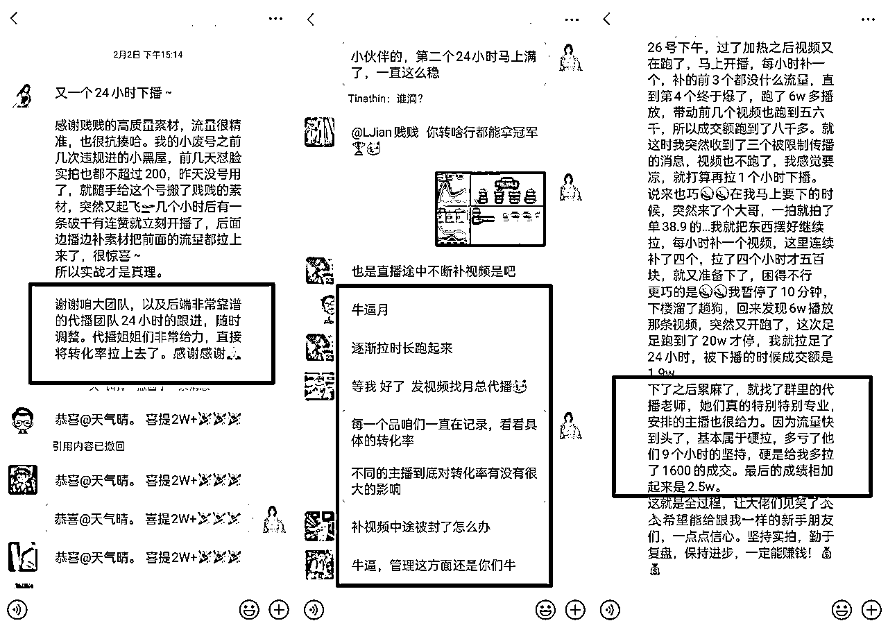
在每个阶段，坚持做好当下能做到的最好就是了。
团队稳定下来后，我就更多琢磨：
怎么把代播效果做得更好？能不能更细致地打磨，让效果更好？
除了正常上下播，针对拉时长的直播间，每一次三小时换麦时，
我都要求号主把这个时间段数据大屏截图给我，好对比参照，看同一场直播，不同风格的主播，整体转化率差异会有多少？
多方对比下来，同样的视频素材，同样的品，不同直播间的转化率跟主播的影响不大（也有可能因为我们主播的能力相差不大）
比如小炒酱，第一个直播间无论哪个主播上去都是8%左右的转化率；另一个直播间无论哪个主播上去播都是14%左右的转化率；整场直播下来，最高和最低之间的差异不超过2%。
不过数据样本没有足够大，所以也只能客观参照一下。
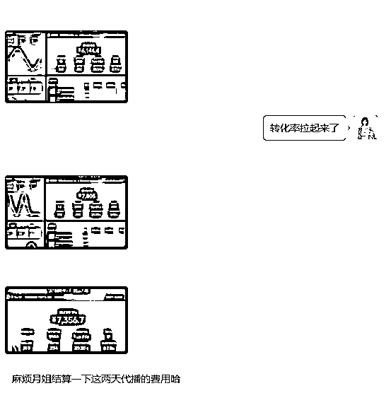
但有一点是可以肯定的，直播和视频是相互共振 ，相互促进。
只要有流量，随着直播的时长足够，直播间的推流也会变得更精准，拉时长真的很有必要，后来就出现了好多通过拉时长而爆单的。
整个二月都处于，面试主播——培训主播——优化话术——上场直播，这样的忙碌状态。
忙碌让我们没有时间去思考，每天机械化的工作，一直到大年二十九都有人要代播。
春节期间我们轮班接单调度，光华负责早间4点—12点，大麦负责12点—20点，晚上20点之后就由我来。虽然是这么分配的，但是我们除了自己的时间段，其余时间也是只要醒着就在不停回复消息，或者是上播。
春节，湖北冰天雪地厚厚的雪，村子都出不了，离了空调和暖气片感觉一秒都过不下去了。
光华每天凌晨四点起来窝在被子里看一眼手机，就立马爬起来到电脑前坐着，给老板们组群，安排主播上播换播，回复回不完的消息。婆婆早餐煮的面条端到电脑桌前，等有空吃的时候都早就凉了坨了。
我也是作息和家人们颠倒，晚上工作到凌晨三四点，白天睡到中午，睁开眼也是不停的回消息。调度压力大，没有人接力的时候，就架上手机，摆好样品开播。好多次妈妈上楼喊我吃饭，不是在直播，就是在面试。
整个春节期间，有的老板要拜年，或者回村不方便登陆账号，那么我们就接过来，自己登陆账号帮忙盯着后台数据。
一旦我们把号接过来帮忙登，基本就意味着这24小时别想休息了，因为除了换麦，还得帮忙补视频。
我们的宗旨就是一个：我们能做的就尽量多做，多多生财代播团队就是大家的最强后盾。
因为这一系列的操作，真诚利他，也为年后业务爆增奠定了良好的群众基础。我们就一个信念，既然开始了，就得尽自己最大能力做好。
三十和初一休息了两天，大年初二就又开工了。
视频号的这波红利，逆天改命的机会，抓住一次就够了。
社群小伙伴们都超级卷，我们的节奏也必须跟上。
每次我们拉爆了直播间，看着热卖跟自己赚钱一样兴奋。
如果只靠我们几个人，没日没夜的这么在一线熬，用不了多久都会扛不住的，于是我们决定改变一下管理方式，能放出去的岗位都招募助理来替代。
招募助理，也是先从朋友圈内以及过往的学员中发出邀请，几天时间就有五位助理到岗，三人轮班，每人八小时，月工作26天，当时每位助理我们开出的工资是试用期3000-3500元，因为业务不确定性太多，所以我们初步制定的是低底薪+高奖金的模式。
助理的工作大概如下，基本上熟悉了这个流程就不会乱不会出错，上手都很快，但随着业务量的增长，实战过程中，这些流程我们又优化了好几版。
当时我们整理的助理调度流程：
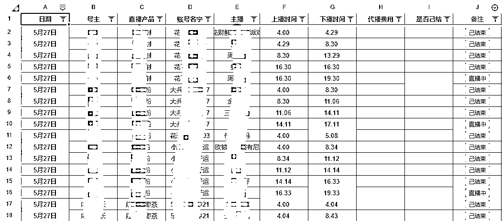
各群内助理按流程调度，后面腾讯云文档内，登记好信息，这样一目了然知道各直播间情况，提前安排接力的主播，整体的流程也算是比较完整，但还不够高效，后面我们在此基础上又有优化。
因为所有的项目都是我们三人跑通的，所以在调度这一块也没有觉得有什么难度，但是真正招募助理时，才让我们切实感受到，从来没有接触过类似项目的人来做助理，真的有点难。
前期朋友介绍，朋友圈有人主动报名，都是光华先电话沟通讲解整体的流程，工作注意事项，然后把助理调度流程表让对方熟悉，再把助理二维码扫过去，让对方实习两小时。
一边调度，一边填表。
结果，晕了、吐了、眼花了......基本上是实习两小时内都放弃了，有个别能坚持上班的，几个小时下来也不干了。
这个时候我们才认真总结正视这个问题
首先，我们现有的助理坦然，他是部队出来的，而且来光华家里面对面了解了这个项目，加上自己本来就是非常聪明灵活的，所以一点就通，上手也是游刃有余。
助理金金，本来自己就是做视频号的，所有流程都清楚，再加上是银行的工作人员，调度、沟通这些对她也不在话下。
助理橘子，大厂工作人员，那理解能力嘎嘎好，我们的调度腾讯的云表格就是他给优化的。
其它人不了解这个项目，而且又都是线上实习，可能会有点晕，再加上我们对于响应的速度有要求，基本上工作时间是不能离开电脑的，即使去厕所也要速去速回，对他们来说更是难以接受。
所以我们当即调整了时间和工资，扩大了招聘面，不局限于朋友圈和朋友的转介绍 ，直接在BOSS上招聘，时间从以前的八小时，调整到了六小时，24小时安排四位助理一线调度，白班工资4000元，晚班工资4500元。每月26天，休息4天，如果不休息就按加班日薪计入工资。
这么调整后，每天光华收面试的消息都收不完。
收到消息后，先电话沟通，对候选人筛选了解，再针对各方面都比较适合的，约时间，来我家实习，面对面指导流程，再上岗2-3小时，调度+填表，不懂的就问，我们现场解答。
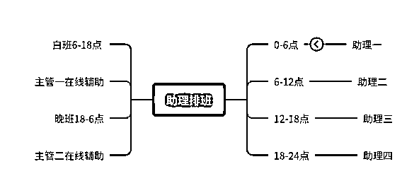
经过这一系列的操作，我们的助理岗位全面安排好了，四个班，0点-6点、6-12点、12-18点、18-24点，每个班六小时，时长缩短，能更好的保障助理在岗时期的注意力集中。
随着业务量的增长，在四个班次之余，还另外配备了白班主管6-18点，晚班主管18-6点，每人12小时，用于辅助各当班助理，查看各直播间主播的整体状态，做到心中有数。
所有的动作，目标只有一个，快速响应，配合各老板的需求，全力满足，提升转化率。
代播团队，不仅仅是有大量优秀的主播才可以，幕后的各岗位的通力配合更重要
随着团队的扩张，我们把能交出去的工作都交由各岗位工作人员来完成。
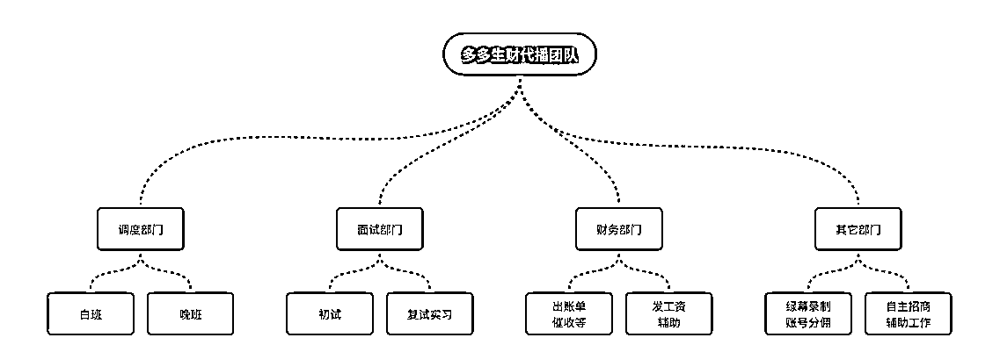
调度助理：是第一位，目前的四位助理+两位主管，磨合得都挺好，越来越多老板对我们助理的响应速度，以及配合程度都很认可。
有时候老板的粉丝人数没有达到100人，助理会及时安排各主播帮忙关注涨粉，这些都是免费的增值服务。
财务：当天主播的上下播时间，除了后台调度云表格内有填写，主播下播后也会在老板群内发自己的上下播时间，所以财务次日会针对这些数据进行核对，整合，出账单，一份发给老板结款核对，一份用于发主播工资，确保零失误。
面试部门：都是从我们优秀主播中筛选出来，本身就有一定的实战经验，深知主播需要做到哪些。
我们的面试要求：
其它部门：随着业务的衍生，很多其它社群有这方面需求，我们都是先对接，能做到的就立刻安排。
这些业务我们主要目的是为大家提供增值服务，团队并不靠这些来赚钱，但都是安排专门助理来负责这些版块，把交付做好。
春节前的定位是快速成长，先干了再说。
春节后的目标是精细化运作，继续做好口碑。
前期服务的客户多半是孟总的视频号口播计划训练营的学员，随着团队人数增加，大家跑通项目之后，都开始招募自己的小团队，租号，做矩阵，相当于一个人背后就是一个团队，就是一个工作室，几十几百个账号。五百人的群，背后就是几千个账号。
做矩阵没有时间自己播，代播业务量眼看着密集起来。做视频号训练营的团队很多，那个时候我们没有外拓客户。因为以目前主播的体量，一味去拓展业务，那肯定交付不好，我们宁愿主播闲一点，也不情愿让老板们等待。
出镜人如何让人看起来觉得放心、直播开头第一句说什么、如何根据直播数据调整自己的话术节奏、如何把产品卖点给提炼出来精准吸引促单……
除了平时不定期的直播培训指导，就是在话术上面优化，飞书文档内的话术基本上每天都会进行优化，针对当时的爆品会优先整理，除了我们代播团队的总结，还有老板们自己优化的话术，全部揉合到一起，再供主播们去学习提升。
我们会根据平台的调整，不断的优化话术，基本上每天都会更新。
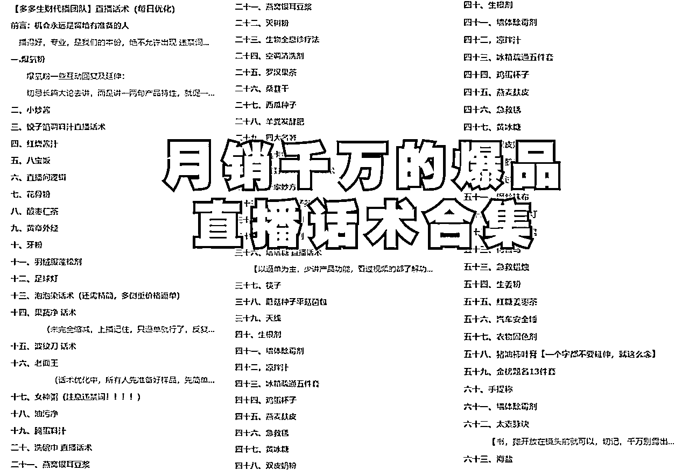
这些过程都是比较琐碎的，每个主播的风格不一样，有的大嗓门，特别有激情；有的是温文尔雅，娓娓道来的听着就像朋友在拉家常一样；
我们的要求是，掌握好直播间的节奏，适时调整，人多怎么说，人少怎么说，至于风格，大家根据自己的性格特点来就行。
我们的主播大都来自小县城，有的是农村的，基本上都是两个三个孩子，平时要接送孩子，想找一份工作比较难，结婚生孩子后几年十几年没有工作，也没有收入，主要生活就是围着老公和孩子转，被另一半看不起，甚至有时候孩子都瞧不起自己。
自从加入代播团队，每天只要上播就有收入，除了自身能力的成长，还有金主爸爸们的认可奖励，泡在这一个搞钱的社群里面，精神和物质双丰收，在家里面孩子也以妈妈为榜样了，在家里面也更加有底气。
三月中旬，口播训练营的新玩法越来越稳定，基本每天都有10万GMV出现，社群的搞钱氛围超级浓厚，我们预感到代播业务也会有一大波增长，带着助理们把面试节奏拉满，紧急新增主播。
三天新增350+主播，但是也扛不住短短两天时间1.5倍的增长。助理调度、主播节奏，都需要磨合。新增的主播来不及更深入的培训，了解了流程就紧急安排上了。
问题也随之而来，新主播能力参差，有的反应慢的，很快就被老板换下来，一来体验感差了，二来助理得重新换主播，调度的工作量无形中又增加了。
有问题就解决问题，这一波的增长让我们深刻感受到——宁缺毋滥。
于是又重新开专场直播，要求这一批新增的主播一一再面试，进行优胜劣汰的筛选。整体直播下来，人货场方面表现好的，进一群二群，表现不好的回实习群回炉重造。助理派单也优先往一群二群派单，实在没有人了再从五群选拔。
主播层次就这么分开了。
当我们发现转介绍越来越多，主播大多都是外部团队过来的时候，才真切的感受到，我们一直坚守口碑，压根就不需要我们外拓业务，大家自发的推荐，业务都来了，同时，各种稀奇古怪的百货品类也出现了，遇到这种情况我们是能找相似就安排实物，实在没有就只能打印（现在打印的不能用了，可以空播），尽全力配合金主爸爸打好每一场直播。
关于好口碑我们复盘，大概是以下几点做得比较好：
1.坚持团队宗旨：流量第一！
主播节奏如果跟不上直播间流速，随时换。这是我们对每一位老板的承诺，并且切实践行着。
2.助理团队24小时轮流值班，无缝对接，团队秉承一点：全力配合老板把流量榨干！
现在对于助理的响应速度有了更高的要求，只要老板在专属群内有发声，助理必须5秒内响应，特别忙那也得在30秒内响应。正常调度一分钟内就可以把主播安排入群。
调度高峰期时间就不定时，但是也会及时在群内给老板反馈，具体到几分钟给答复。
如果是新人老板第一次开播，不会连麦，不会走流程的，助理会全程进行指导。
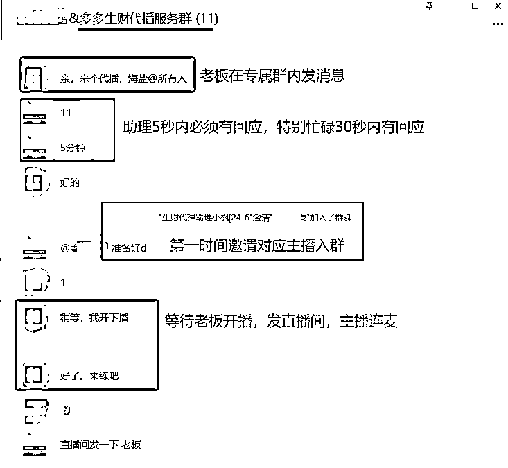
如果老板有特别的要求，比如：直播间流量比较大，需要节奏快一点，逼单猛一点的。
助理在安排时，会针对性的挑选对应的主播上播，因为助理平时在一线，对于各主播的整体情况相对了解，所以在安排时也能更个性化的匹配老板直播间的需求。
或者是老板对哪些主播比较熟悉，非常认可，有时候上播前会指定某位主播，助理也会第一时间去与主播沟通，是否有时间来播，如有就立刻安排；如无，就先安排其它主播，到点再让这位主播接力。
3.流程优化完备
主播招募初试通过后，对应的各群主，会针对性的把问卷答题给主播考核，主要是针对上下播的一系列实战流程，以及可能会遇到的问题，问卷考核也是帮主播进一步的梳理流程，对于接下来的工作会更清晰。
复试、实习后，就是每个人必须准备3-5种实物样品。（优先近期爆品，为快速接单做准备）
再进入对应的接单群，表现一般的先进五群，会安排大家有跳群的面试，或者是平播的直播间（不需要互动，稍微简单一些的直播），五群的安排上，表现优异的，会安排进前面的群，不同的群单量不一样。
经过这一系列的流程操作下来，主播的能力得到了锻炼，哪怕第一次去给老板直播，也不会表现太差。
4.培训筛选优化
目前除了我和光华培训，每个月都会安排优秀主播进行培训分享，大家从不同的角度来全方位的学习提升，助理及主管会针对每场直播，看主播在直播间的状态。
哪里不足，下播后一对一进行指导优化，能力不足的可以提升，态度不行的直接清除出团队。
即使做到了不断的优化，主播上播还是有太多不可控的因素，毕竟人的状态不是可以固定的，我们只能尽可能的去引导监督，随时调整。
提升空间还很大，我们会一如既往的保持谦卑心态，做好最强助攻的角色。
这些召之能来，来之能战的团队，都是我们日常交下的朋友，或者一手带起来的学员。这种感情基础，能力基础和凝聚力，无需过多磨合，都是外人不能替代和企及的。
合伙人光华，之前一直想合作做点事情，为此她还特地把房子换到了我们小区，每天同进同出，但一直没有找到非常契合的项目。这次创立代播团队，无需多言，一拍即合，我主外她主内，彼此配合把各自的优势发挥到极致，千人主播团队才得以如此顺利的推进。
多多生财代播团队主播多半是宝妈，平时要照顾孩子，也没有机会出去工作，这份线上代播工作不仅免费培训，还有时薪可以拿，大家都挺知足的，于我们而言，这份事业，成人达己，又在我们的能力范围内，为之拼尽全力也甘之如饴。
每月月底我们在团队文化建设方面，针对工资前十名进行了表彰，最多一位主播工资+奖金拿到了八千多，足不出户在家里面，这份收入超过了好多上班族；以前都是我们创始人团队给主播培训，现在团队主播一千来人，为了给优秀主播更多展示的机会，我们安排了前十名优秀主播每天一位分享自己的经验。
大家相互交流分享，给新人做好榜样，老主播之间相互情感链接也更加紧密，早晚接送娃高峰期，调度压力比较大，或者有的主播播了好几个小时没有人来接力时，姐妹们之间就会自动自发创造条件去接力。
虽然我们的团队还不够完美，但是我们每天都在成长，在团队中，每天都能收获各种感动。
接下来，我们侧重点在于团队建设，扩招主播是必然的。同时，针对目前的千人团队，其它几条业务线，全平台连麦代播、绿幕录制、实景代拍、口播录制等，己陆续展开合作。
回想这三个月真的好魔幻啊，年初我还很迷茫，不知道这一年该何去何从，到现在组建千人主播团队；从靠出卖自己的时间赚钱，到成为一个小小的“资本家”。
有需求就有市场，代播这一项业务，不仅解决了在视频号崛金的朋友们直播转化的这一痛点，GMV直接翻番，还给千人宝妈提供了一个就业的平台，真正做到了成人达己。
无论发生什么，我们代播团队，都会保持自己的节奏，发心，做好每一次的交付，不辜负每一份信任。
所有的路啊，都不是白白走的，不要急，不要慌，把事情交给时间，不要停止前进的步伐，在还没有意识到的时候，事情就已经朝着积极的光明的方向发展了。
这几年最幸运的事情就是知道生财，加入生财，跟随生财；
如果没有生财，我就不可能接触到一个又一个好的项目和团队；
如果没有生财，我可能就和身边做实体的朋友一样感慨如今的钱好难赚啊；
感谢@醒醒 引领我加入生财，犹如潘多拉的盒子，让我链接到了一个又一个宝藏圈友，通过你的盖洛谱也让我更进一步的认识到自己；
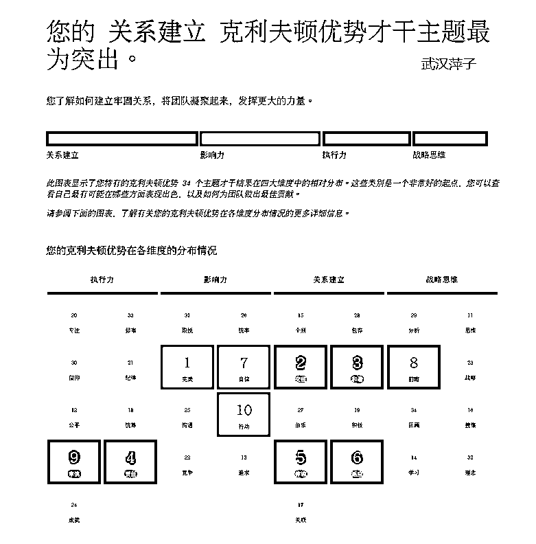
感谢@梁靠谱给我方向建议，鼓励和指引，借此表白靠谱，你也是我一直想要靠近的人呐，越走近越发觉得宝藏谱子魅力无穷。
未来很多年我们还要继续一起做很多事，赚很多钱呀！
无数次在心里，在多种场合下，公开表达对生财的喜爱，感恩亦仁大大搭建的这个平台，何其有幸，让我得以遇到这么多优秀的同行者，一起相互陪伴成长的家人。
以前只是一味从生财汲取能量，获得赚钱的渠道和信息，总是妄自菲薄，觉得自己只是一个全职宝妈没有特别高的学历，也没有过人的本领，只是运气比较好，经常能遇贵人。
其实，我们大多数人都是从无到有，对很多项目都是从0到1，只要做好当下的每一件小事，一件件去积累，遇到机会时，以往的经验都会被串联起来，没有白走的路，靠近生财，多多发财。